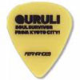
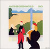

|  |  |
トータス
TNT。 ：この人達みたいな生き方は素敵だと思います。
W.A.モーツァルト
レクイエム。 ：最後ら辺は聴かなくてもいいのかもしれませんね。
モグワイ
：都会派ではなく猛烈に自然派です。
くるり
ワールドエンドスーパーノヴァ。 ：歌えます・・・。
ガブリエル・フォーレ
シシリエンヌ。 ：名前は知らずとも一度は聴いたことがあるでしょうね。
ブライアン・イーノ
：アンビエントミュージックという形態を直観的に理解できればどれも素晴らしいものです。
マイルス・デイヴィス
：基本的にジャズは興味薄いんですけどマイルスは別って感じです。
スーパーカー
：布団に籠って、まったりと聞いて、何ヵ月過ぎた？
ニルスペッターモルヴェル
ソリッドエーテル。 ：昔、偶然試聴して発見しました。レコード探しは楽しいですね。
A・Y・B force
ロストブレークス。 ： 日本のヒップホップです。・・・普通に紹介してみました。
A・ドヴォルザーク
新世界。 ：子供の頃クラシックで一番好きでした。シンプルなんですかね？
スティーヴ・ライヒ
：いわゆる現代音楽はあんまり詳しくないんですけどライヒはカッコイイんです。